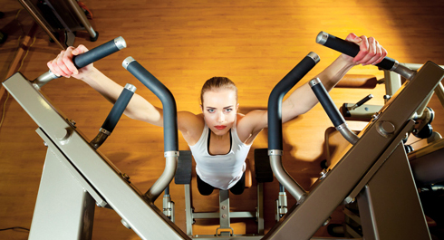

Hi there! We continue to discuss in details all the components of our training program, and today's infopost will be dedicated to pull-ups on the horizontal bar. For many of people this exercise is a stumbling block, because the correct performing of pull-ups is the most difficult task in our complex today. I recommend you just to get ready, as today we have a lot of information!
Pull-ups

It’s the one of the key exercises to train the upper half of the body. Due to its complexity, it uses both the large sets of muscles (pectoral muscles, muscles of back and arms) and the small muscles-stabilizers.
Key points
1. The greater the amplitude of motion, the more muscles surrounding the scapula are involved in the process;
2. When you’re hanging on the bar, the shoulders should be lowered and pulled back, and they must remain in that position ALL THE TIME;
3. Performing pull-ups, try to pull the bar towards yourself, not yourself towards the bar;
Safety procedures
Since shoulder and elbow joints(as well as the wrist joint) are actively involved in performing pull-ups, it is very important to follow the correct technique:
1. The motion should follow the natural path, without any sudden movements or jerks;
2. For reaching the maximum effect it is necessary to keep the muscles in tension and to pull slowly up and slowly down; this will protect you from injury;
3. Do not round your back. If you can't do that, choose the simpler versions of exercises;
4. In case of any discomfort, try the other option of exercise: for example, change the grip.
Pull-ups on the bar can be divided into 4 components:
1. Hanging on the bar
2. Pulling-up
3. Fixing at the top
4. Returning to the starting position.
Simplified versions of pull-ups
If you still can not perform pull-ups properly, use the following options as the preparatory exercises.
Pull-ups on a low bar (often they are also called Australian). They allow you to feel the back muscles’ work deeper, when your strength is not enough for performing classical pull-ups.

Pull-ups with an additional support. They let you to adjust the load distribution between arms and feet, thus they are great preparatory exercises, which gradually prepare you for full pull-ups.
Pull-ups using rubber bands. Complicated version of the previous variant as the feet are placed on the movable support and you have to use additional muscles to stabilize your body in space.

Pull-ups with a partner. If there is someone who’s ready to help you with performing the pull-ups(to push the feet), this method can also be used.

A few words about the gravitron (a simulator for pull-ups training)

At the moment we haven’t met a SINGLE person who could learn pull-ups using the gravitron. The main problem of this simulator is that it almost completely eliminates all the complexity of pull-ups as exercises, leaving only the vertical pull (not significantly different from the block pull down exercise). Thus, your muscle-stabilizers are not included in the work, there is far less load on arms, forearms, grip, the back muscles.
In our opinion, this simulator is a waste of time, and if you don't have any serious reasons for using it(e.g., medical prescriptions), it’s not worth even coming up to it. It is better to start with the Australian pull-ups.
Useful advices
Breathing. For the pull-ups as for any other exercise, there is a rule: inhale in relaxation, exhale on the effort. So you exhale when you’re pulling yourself up, and inhale going down. At first you may feel strange to breathe in this rhythm, but this is only the beginning. In fact, when the breathing and the movement are simultaneous, it only helps. Moreover, to achieve high results in pull-ups (20 or more repetitions) will be much harder without proper breathing;)
Muscle tension. We use the most flexible (and therefore prone to injury) joints of our body in the pull-ups. So when you ‘re pulling up, it is very important to focus all the attention on the correct performance of the exercise and not be distracted by anything. This also applies to the positive phase (when the body is rising to the bar) and negative phase (when the body is lowing). Never relax your hand until the end, "dropping" yourself down: the descend needs to be controlled, and the muscles of the arms and back must be in tension.
Neck. If you don’t want to have problems with the cervical spine, then put your ego aside before training on the bar. The point is that a great many of people look for the quantity and are ready to do any pull-ups and to twist as you like, just in order to put their chin above the bar. Go to the nearest sports ground and look at these “athletes”. I am sure that you have the guys who instead of pulling their backs try to stretch their necks as far and high as possible. Do not repeat their mistakes. Keep the neck the same when standing on the ground, while performing pull-ups. The gaze is directed forward. Pull yourself up only with back and arms, and if your chin is below the bar, it's not a reason to be upset: so, you just need to gain more strength. In course time you will succeed.
Hands and grip. Doing pull-ups lots of people notice that at first their grip fails, and the hold unfastens accidentally, although, in general, the rest of the strength would be enough for another few repetitions. In this case, we would recommend including the exercises, that are especially aimed at the developing of grip’s power, in your training (after passing the circles). It can be either ordinary hangs on the bar to the maximum (the thicker the bar you will find, the better), or pull-ups on towels and trainings on monkey bars and mazes, etc.
Different grips. If you start your training journey with our program (and you pull up less than 10 times), we would recommend that you to pull up only with basic(upper) grip close to shoulder width (if you can't pull yourself up 5 times in this grip, try the reverse(underhand) grip close to shoulder width). If pull-ups for you is a new and rather difficult exercise, it is not necessary to spend your energy and try to perform it by all possible options. We’ll analyze in details the different types of grips and how they allow you to shift the load from one muscle to the other, in the ADVANCED level.
If you are not a beginner, you can change the grip as you want, but we would recommend doing according to the rule 1 day = 1 grip.
Legs. Our favorite piece of advice is about the position of legs in the pull-ups, although many people do not even think about it. The most difficult and the best option is to keep legs straight and together, perpendicular to the ground, straining the muscles of the legs to eliminate the wobble of legs during the pulling-up. Yes, this way of pulling-up is much harder than the one with crossed and bent legs, but it means that the load becomes higher! And these clean pull-ups look much more aesthetic.